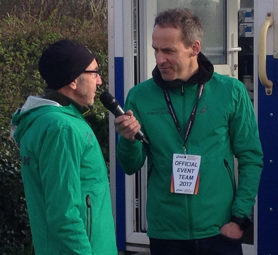
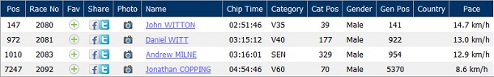

After keeping a careful eye on the weather all week, I was very relieved to see the forecast predicted conditions were going to be perfect for the marathon on Sunday, writes John Witton. I travelled to the start using the Metrolink and it was chilly at 7:15 before the sun was properly up, but the skies were clear with just a smattering of cloud and, importantly, no wind.
The race was very well organised with marshals directing runners to the bag drop area from the Metrolink and clear signposting. After dropping my bag, I made my way to start area B to start warming up, bumping into Andrew Milne on the way. It was great to see Ron Hill interviewed,

who later started the race. Amazing that this year he finished a 52-year streak of running every single day!
Dan Witt found me at the start and we set off together at the signal, shuffling our way over the start line before breaking into a run. I had a pace range I wanted to stay within to try to achieve my target of sub 3 hours and, with excellent crowd support, wide, traffic free roads and excellent marshalling, I managed to stick to the lower end of it (4 min per km) for the first 20 miles. I felt comfortable up to this point and was buoyed by the support of my family at 9 and 16 miles, but the last 6 miles got tough. My pace slipped to 4:15 per km but I managed to hold on, and was delighted when the finish came into sight. The finishing straight was very long, however, and didn’t seem to be getting any nearer as I pushed myself to maintain my pace. It really started to hurt in the final few metres and I could feel the first twinges of cramp in my thighs, but I made it over the line in a time of 2:51:46, which I was ecstatic with.
I was nearly sick after the finish, due to the gels I’d consumed, but I managed to recover and by the time I'd collected my medal and goody bag, pint of alcohol-free beer and my bag from the bag drop, I felt fine. It was great to see my family at the meeting point and we all went for a celebratory lunch before I met Dan for a couple of pints.
It was a really enjoyable, well-organised race, on a superb flat course with excellent crowd support and we were very lucky with the weather.
The SAC results were:

The full results are here.